What follows is a true and mostly accurate account of recent events in Daggerford, assembled from the testimony of stall-holders, guardsmen, one furious cart owner, and this chronicler's own two eyes. I do not know what anyone was thinking. I can only report what they did — which, in fairness, was plenty.
Dramatis PersonaeFour strangers, briefly
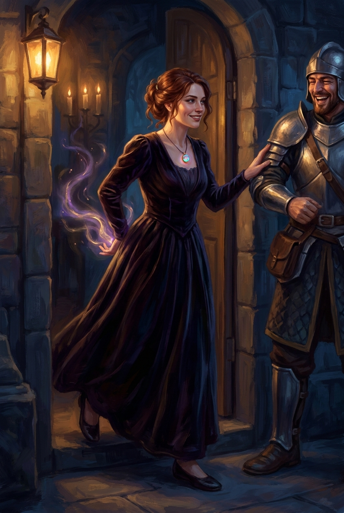
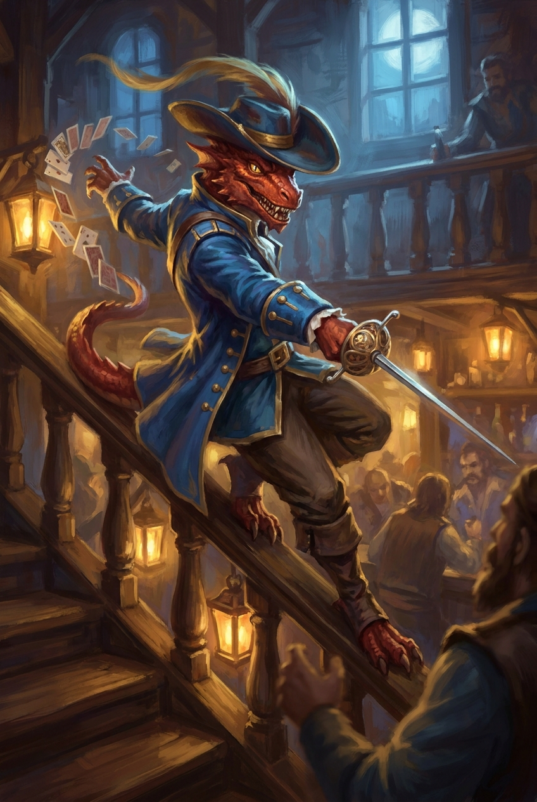
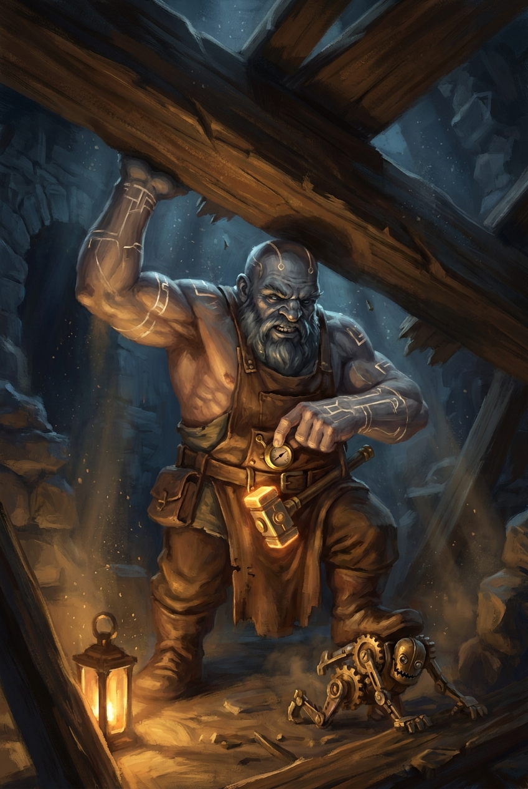
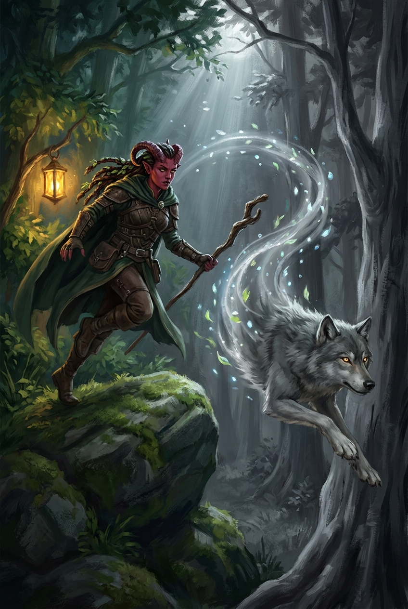
Portraits: artist reconstructions from third-party description — accuracy not guaranteed; likenesses disputed by all four subjects.
Chapter OneThe night the sky fell
It began, as festivals so often do, with everything going wrong at once.
On the eve of the great night — the Returning Star hanging fat and brilliant over the market square, sixty years since its last visit — a second streak of light peeled away from the first and came down behind the fountain with a bang that knocked the froth off every ale in the square.
What climbed out of the smoke was, depending on which witness you believe, a hare, a demon, a very fast turnip, or "a rabbit that Chauntea drew from memory." It was small. It glowed. It had, by broad consensus, more eyes than strictly necessary. And it was terrified — which the crowd expressed solidarity with by also becoming terrified. A stall went into a brazier. A fire started. A horse made a break for it and took a cart with it.
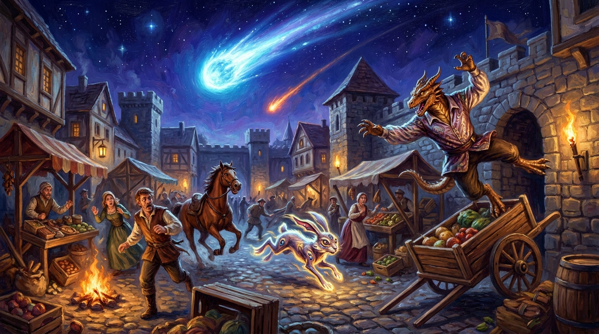
Artist reconstruction from third-party description — accuracy not guaranteed.
Into this scene stepped our four strangers, separately, and each entirely in character — as I would come to learn.
The dragonborn festival guard attempted what I can only describe as an architectural route to the creature: up a cart, off a wall, over the square — an approach that ended inside a different, collapsing cart, from which he emerged with the immaculate posture of a gymnast who has decided the fall was part of the routine. He then produced a rope, tied a truly beautiful lasso, and missed. Twice. Both throws were gorgeous. The creature simply declined to participate.
The tiefling raised her hands, said something green and rustling, and the fire — I saw this myself — sat down like a scolded dog, half its former size.
The young woman from Harvest Hill stood very still at the edge of the square, watching the creature with an expression I could not read and will not pretend to.
And the short, enormous foreigner — the one shaped like a keg wearing a larger keg — surveyed the burning, screaming, horse-infested square, nodded to himself, put down a bag far too heavy for a man twice his size, and began, with total serenity, to build something. Hammering. Mid-apocalypse. Witnesses describe the sound of cheerful tinkering underneath the screaming, like a music box in a thunderstorm.
The something turned out to be a cannon that fires nets. Maybe. Witnesses disagree on whether he finished the net-firing device, or simply changed his mind partway through, stomped toward the small creature, and threw the net himself, by hand, without any contraption at all. I am told neither of these is a normal thing to do. Either way: the creature was netted. The square exhaled. The town crier announced, with the confidence of a man paid by the announcement, that a fragment of the comet had landed and all was well.
The four people standing around a netted creature with too many eyes did not appear reassured. They appeared, if anything, acquainted — in the way of people who have just jointly acquired a problem.
Comet Fragment Lands in Square; Lord Mayor Urges Calm
Officials confirm the object which struck the market square on festival eve was a harmless fragment of the Returning Star. Damages are limited to one (1) stall, one (1) cart, one (1) watermelon, and the dignity of an unnamed member of festival security.
The Lord Mayor reminds residents that the Star brings fortune, and that panicking during a festival of fortune is in poor taste.
Chapter TwoThe interview in the alley
The four withdrew to a side street, where the druid knelt by the net and — witnesses on the overlooking balconies swear to this — spoke to the creature, in chirps. The creature chirped back.
The conversation, as later relayed: it remembers fields. It remembers eating carrots — the ones with three heads, it specified, as though this were the ordinary kind. It was with its friends, and then it was here, and it does not know what a comet is, or a race, or, when pressed on what it is: "I'm a me." It also expressed a strong desire not to be eaten, and was reassured on this point by everyone present, twice.
Philosophers have retired on less.
One further detail, and I set it down plainly because it mattered later: whenever the creature stopped being spoken to, it turned to stare in one particular direction — through walls, as though walls were a rumor. The direction, once the party stepped out and sighted along its gaze, was the hill above town.
Lord Vey's manor.
The creature was asked if it wished to go there. Witnesses report it expressed, in chirps, the strongest possible no.
Chapter ThreeThe knock on the door
Here accounts diverge on why, but agree entirely on what: the foreign gentleman, alone, at night, marched half a mile up the hill and went round the manor like a man inspecting a property he intends to buy. Dark west wing. Locked rear. Lit east wing, windows too high for a man of his — let us say concentrated — stature, though he glimpsed something large in a grand room within.
He then knocked on the front door of the most powerful man in Daggerford, at night, uninvited.
A tall, thin, grey personage informed him the manor was closed to visitors. The gentleman, undiscouraged, persisted — records at the guardhouse state he was still explaining himself, with diagrams, as they surrounded him. A member of festival security who arrived during the arrest reviewed the situation with the eye of a professional and offered his colleagues the following expert guidance: "He's being a bit of a dick — why don't you just take him to jail?"
They did. His small brass dog(?) went with him, voluntarily, which the night warden logged as the first recorded instance of a machine refusing bail.
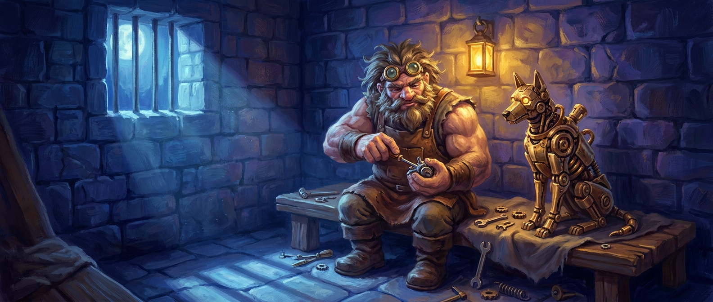
Artist reconstruction from third-party description — accuracy not guaranteed.
Detained
One (1) foreign gentleman of unusual proportions, on charges of Knocking Persistently. Detained alongside: one (1) small brass hound(?), no charges, would not leave. Both released the following morning into the custody of an associate describing himself, improbably, as "his supervisor."
Chapter FourThe grey rings
The next morning — the day of the great night itself, comet due at zenith — the druid told her new companions what her woods had been telling her for weeks. The land is going grey, she said, and they believed her the way you believe a weather report: politely. Then they saw the ridge road for themselves, and stopped being polite about it.
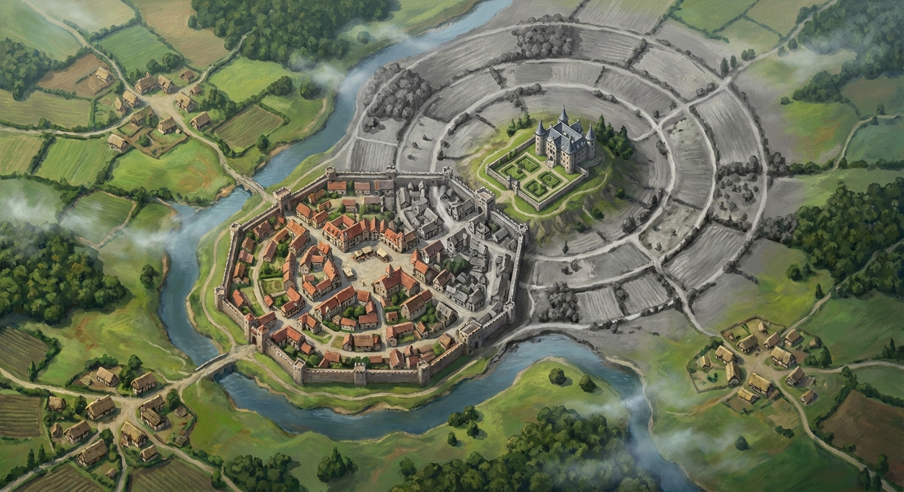
Artist reconstruction from third-party description — accuracy not guaranteed.
Not dying — fading, in great concentric rings, grass and hedge and tree drained like dye rinsed from cloth, and the rings have a center. You could stand on the ridge and draw the circles with your finger, ring inside ring inside ring, closing on the hill above town.
On the manor.
The rings had grown by the walk back. The animals, the druid noted, had already worked this out; they have been leaving for weeks. Animals do not wait for the town crier.
Chapter FiveThe salon
That evening Lord Vey opened his manor for the festival's grandest gathering — fifty guests, a string quartet, and enough displayed treasure to ransom a modest king. How our four came to be inside is a matter I decline to examine closely, though I note for the record that festival security walked in through the front door, and that a guard on the east terrace was seen that evening buying a round for his colleagues with unusual generosity.
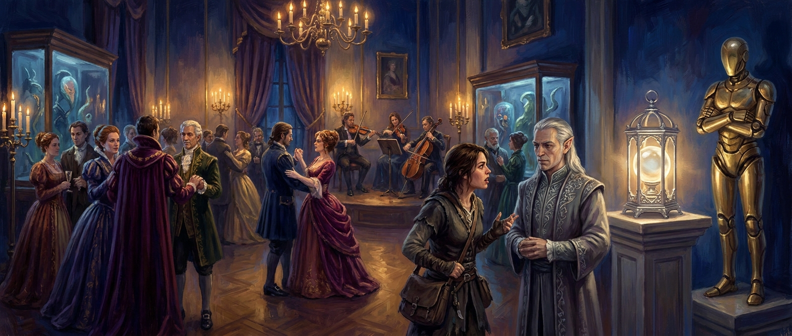
Artist reconstruction from third-party description — accuracy not guaranteed.
At the head of the great room, on a pedestal, stood the evening's centerpiece: a sphere of milky glass in a cage of silver, glowing faintly. Pulsing, if you watched it long enough. Guests called it the lantern. Beside it stood a construct of polished brass, seven feet of it, utterly motionless all evening — and if you think a motionless thing cannot follow you around a room, you have not stood in that one. The doors to the east wing stayed locked, flanked by guards, and from beyond them came a hum you felt in your teeth rather than heard.
Gossip flowed faster than the wine. That a certain gentleman had offered a thousand gold for the lantern and been refused. That Vey would say only that it was essential for something. That he has owned it barely a month. That he has been quietly buying every scrap of star-metal in the region. And that he has not been the same — this from an old acquaintance of his, into his fourth glass — since his wife died, eleven years ago.
Our four worked the room in their four ways. The sailor acquired an instant title, a fictional estate, and a conversational orbit of wealthy admirers. The druid watched the room the way she watches weather. The foreign gentleman studied the brass construct with the expression of a man reading a letter from home. The finder of curiosities walked up to the lantern itself and looked at it for a long moment — and whatever she concluded, she shared with her companions and not with me.
Then three of the four laid their cards on the table, right there among the canapés. The trees, said the druid, and the rings, and the fading. Home, said the foreigner: he wants to go home, and he believes the way is here. A thousand gold, said the sailor, with the sincerity of a man being sincere about money for once.
The fourth said nothing. The fourth went to talk to the host.
I was near enough to hear it, and I will report it exactly, because it was the strangest moment of a strange two days. The young woman from Harvest Hill approached Lord Vey — a man she has never met — and said, quietly:
"I'm sorry that we can't see her. She's not there where you're looking."
The lord of the manor looked at her, puzzled, and asked what she was talking about.
"Your wife," she said.
"My wife died eleven years ago," said Lord Vey — and then something happened to his face that took perhaps half a second and that I will remember longer than the comet. He gathered himself. He said he didn't know what she was talking about. And this man — who had been all evening the perfect, polished host — hardened, turned, and walked away from a farm girl as though retreating from something, while his grey steward materialized to sweep her off toward a bore with opinions about star-metal.
Whatever she touched in him, she touched it clean.
A Triumph at the Manor
Lord Vey's Star Salon was declared the event of the season. The guest list was impeccable, saving reports of a foreign lord of no known lineage but remarkable teeth, and a brief chill in the host's mood late in the evening, attributed by all sensible observers to a draught.
Chapter SixWhere we leave them
Midnight approaches. The comet climbs toward its zenith — the exact zenith, the once-in-sixty-years moment the entire festival exists for. The east wing hums behind locked doors. The lantern pulses on its pedestal like something breathing. The brass sentinel has not moved an inch, which somehow keeps getting worse.
And in a quiet corner of the grandest party Daggerford has thrown in a generation, four people who were strangers two nights ago lean close over untouched wine, and plan. What they said, this chronicler declines to repeat — partly out of discretion, and partly because some of it may constitute conspiracy.
I will say only this: one of them asked whether anyone would like a spider, and nobody laughed.
A note on sources. I was in the salon; I was not in the east wing. For what happened behind those doors I have relied on the household steward (who spoke carefully), the town watch (who spoke loudly), and a young guard named Hob who was ordered to stand outside a door with a ball in his pocket and spent the rest of the evening with his ear pressed to it. Where these accounts disagree I have chosen the funniest, which I am told is the historian's method.
Chapter SevenThe council of the canapés
They had a plan. They had, in fact, several, and spent the better part of an hour discovering that the plans did not agree with one another.
The first proposal, tabled by festival security with the enthusiasm of a man who has seen it done in a play, was to set the curtains on fire. Everyone would run out, the guards would run for water, and the party would stroll into the east wing unobserved. It was the young woman from Harvest Hill who pointed out, not unkindly, that in a fire it is the guests who leave and the guards who stay — and that four people standing calmly beside a locked door in an emptying, burning ballroom would look, if anything, more suspicious than before. The security consultant conceded the point with the grace of a man who had not really wanted to burn anything. The foreign gentleman said he still preferred the spider.
The spider was the druid's proposal, and she proposed it at intervals throughout the evening regardless of what was being discussed. Could she become a spider now? A large one? Could she walk on the ceiling? Could she set a fire and then become a spider, "so it gets confusing"? Her companions explained, with diminishing patience, that a giant spider on the ceiling of a society ball tends to draw the eye. She accepted this the way weather accepts an umbrella.
The plan they settled on was, in the end, the oldest one there is. Two of them would draw the guards from the door. The other two would open it. The draw was to be — I will use the word that was used — seduction, and it was at this point that the foreign gentleman raised the evening's first genuinely difficult question: how did anyone know the guards were straight? A silence followed in which four adventurers reconsidered the entire architecture of their scheme. Festival security, who had drunk with these guards for a week, was able to confirm that they were, and the plan was saved, though not in the way anyone expected.
Chapter EightThe handkerchief
Because the dragonborn did not wait for the ladies to be ready. He simply walked over to the two guards on the east-wing door, nodded in the general direction of his companions, and — I was near enough to catch the shape of it, if not the words — informed them that two young women at the party had drunk rather more than was good for them, were in a receptive frame of mind, and had asked him, as a colleague, whether anyone on the staff might be free. He would, he added, watch the door for them. It was the most persuasive thing I have ever seen a lizard say. The guards' eyes went wide. They looked at each other. They looked at him. They asked, "Are you sure?" They thanked him.
And then they walked over to two women who had been told nothing whatsoever about this.
What the guards heard, on arrival, was the following: that the two ladies were sisters (one tiefling, one human — "adopted," offered the druid, helpfully); that they were feeling hot and bothered; that they believed they might have accidentally taken something; and that they needed some air, specifically on the fluffy mattress that was outside on the lawn. There is no mattress on the lawn. The guards, who were not clever men but were not stupid ones either, exchanged a second look and arrived at the only conclusion available: that whatever was wrong with these two, it was going to be trouble, and the kindest thing would be to walk them briskly out of the building. Which they began, with a firm hand on each elbow, to do.
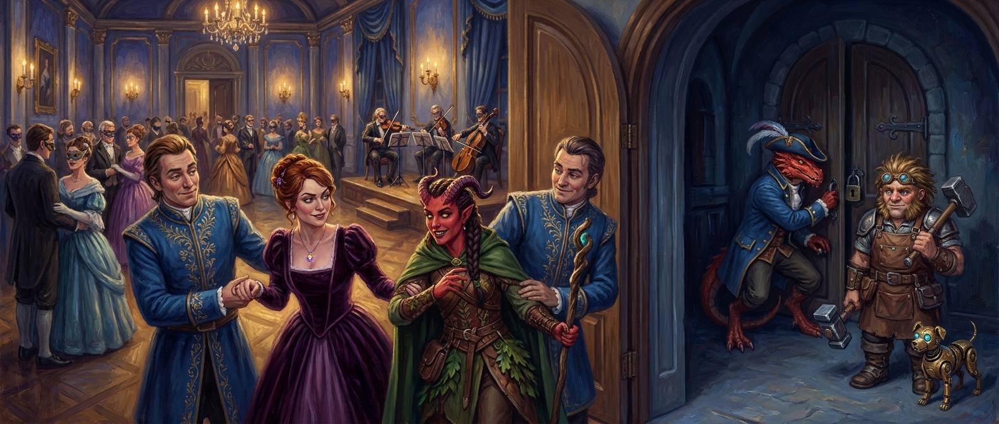
Artist reconstruction from third-party description — accuracy not guaranteed.
The distraction, I must stress, worked. It merely worked on the wrong people. With both guards busy steering two indignant women through a crowded ballroom, the dragonborn stepped to the east-wing door, appeared to drop a handkerchief, bent to retrieve it, and stood up again about ten seconds later with the door unlocked behind him — the foreign gentleman standing squarely in front of the whole operation like a keg that had wandered over to see what was happening. They slipped through. The gentleman's exit was described to me as: one moment he was standing there, the next you saw his back, and then the door was closing.
The ladies saw it too, over their shoulders, while being escorted in the opposite direction. The finder of curiosities attempted a diversion — a purse of gold, conjured out of nothing on the floor, which nobody noticed because nobody was looking at the floor — and then, with the front door approaching and her escort's grip not loosening, did the only sensible thing and vanished in a puff of smoke, reappearing beside her companions on the far side of the east-wing door just as it shut.
This left the druid alone with two guards who had just watched her sister evaporate. They did not ask questions. They took an arm each, marched her to the front door of the manor, and put her out on the step with the words, "Whatever is going on here — go away," and the door closed on the evening's grandest party with a tiefling on the wrong side of it.
She went round the side of the house. She found a window. She could not reach it. She opened it anyway — from the lawn, with a gesture and a word, the way one might open a door for a guest — and climbed in. Witnesses inside describe the window blowing open by itself, and then a druid coming over the sill and saying, cheerfully, "Hey, guys. Hello."
Chapter NineThe bored guard, and the loom
Before that, though: the corridor. The dragonborn and the gentleman found themselves in a short L-shaped passage lit by candles, and the gentleman — whose ears are better than his manners — heard, from behind the door at the end of it, the sound of somebody throwing a ball against a wall and catching it. A prisoner who is bored, he concluded, and put his head round the door to find not a prisoner but a guard, holding a ball, looking very surprised, who said what guards say: "You're not supposed to be here."
He was not supposed to be there. Festival security, however, knew this guard — knew his voice through the door, knew his name — and explained, with a warmth that would have persuaded a stone, that these were special guests of his lordship, sent to view the collection before the great moment, and would Hob be so good as to wait outside and mind the corridor while they had a look? Hob, who is paid nowhere near enough for any of this, said "Fair enough," and went and stood outside the door. He is my best source for what followed, and I have bought him several drinks.
And so three of them, and shortly four, stood alone in the east wing and saw what the whole festival had been humming about.
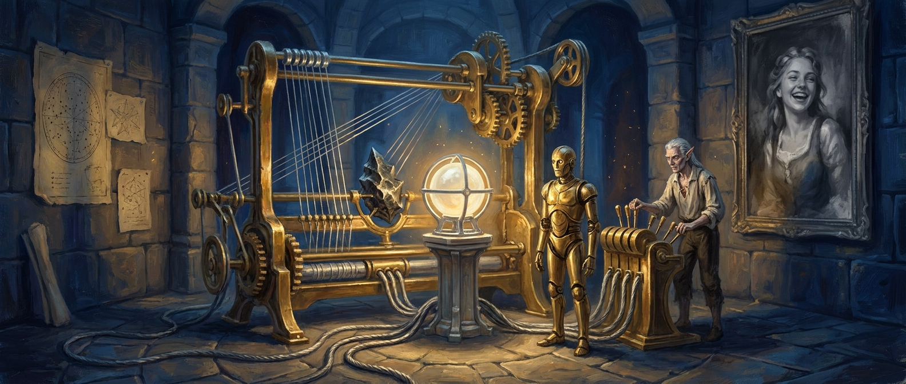
Artist reconstruction from third-party description — accuracy not guaranteed.
It filled the hall. Hob, who saw it every day, described it as a loom, "if the person who built it had only ever had looms described to them." Brass. Silver wire strung like the inside of a harp. Cables running across the floor to a pedestal at the machine's heart — a pedestal exactly the size of the one in the ballroom, and empty. At the centre of it all, a jagged shard of something dark that had, the gentleman said immediately and with an odd tenderness, fallen a very long way. One wall was covered in star-charts with a comet drawn in. On the other hung a portrait of a laughing woman whose varnish had gone entirely grey.
The foreign gentleman walked round it once the way he had walked round the manor, and this time he did not need to knock. Whatever this was, he told the others, it was built to draw on something placed in that cradle — and it was built, he was quite sure, by someone who had spent years studying what the comet does. Which is, apparently, this: it thins the wall between this world and others. And the machine was an instrument for reaching through that thinned wall and taking things.
Things such as, for instance, a short enormous engineer from somewhere else, pulled through a roof on the night of a bad harvest.
He said this quite calmly. He also said that the machine was missing its power source, that the power source was plainly the lantern, and that they had therefore spent an hour breaking into the one room in the manor the lantern was not in. Festival security observed that this had been a very complicated way to find that out.
Chapter TenThe masterpiece at work
They need not have worried about fetching it. The lantern came to them.
The door opened and Lord Vey walked in, in his shirtsleeves, with the grey steward at his shoulder — the steward looking, Hob says, "like a man who has found mice in the pantry" — and behind them, walking, walking, on its own two legs, smooth and purposeful and horribly quiet, the brass sentinel from the ballroom, carrying the lantern in its hands like a butler carrying soup.
Vey did not shout. That is the detail everyone agrees on. He looked at four intruders in his laboratory on the most important night of his life and said, in effect, that it was quite all right that they were here — they might as well witness his masterpiece at work — and would they please stand back from the machine, because it was delicate. Then he went to his levers. The sentinel set the lantern on the empty pedestal. The hum in everyone's teeth went up a semitone.
Several things now happened in the space of a breath, and it is important to be clear about the order, because the order is the whole story.
The gentleman, who had been watching the steward, noticed him slip back out of the room — and noticed lights approaching in the corridor beyond. The dragonborn crossed quietly to the door and locked it from the inside. The young woman from Harvest Hill made a small gesture with her fingers, and an invisible hand nudged the lantern off its pedestal, where it rolled across the floor. Lord Vey looked up from his levers with the expression of a man whose cat has just walked across his manuscript, and asked them — please — to stop.
And the druid, who had been wanting to be a spider all evening, picked up the lantern and became one.
Chapter ElevenOne minute in the east wing
I am reliably informed that what followed took about a minute. Hob, who could only hear it, says it sounded like a foundry falling down a staircase.
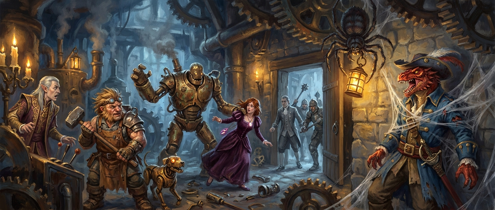
Artist reconstruction from third-party description — accuracy not guaranteed.
The spider went straight up the wall and onto the ceiling, thirty feet above the floor, with the lantern held in its legs, where nobody could reach it and everybody could see it. The young woman threw a bolt of fire into the machine and bent a gear. The brass sentinel, having apparently decided that the person setting fire to the engine was the problem, turned and struck her twice, hard enough that she went from standing to barely standing in one movement. The gentleman swung his hammer at Lord Vey and missed by a mile; his small brass dog did not miss, and bit the lord of the manor on the leg.
Then the spider tried to web the door shut and webbed the dragonborn instead.
I want to dwell on this. He was standing beside the door. The web was intended for the door. It hit him squarely and pinned him to the wall, wrapped from collar to boots, facing the lock, which was precisely the position from which to hear a key turn in it. The steward came through with a guard behind him, took one look at the room, and gave the sensible order — knock them out — and the guards, who did not want to hit anyone, hit the gentleman's armour and missed the girl, and it was at this point that festival security tore himself off the wall with a roar of language I will not reproduce, turned to the newly arrived guards with a smile, and explained that he was not with these people.
Two more guards had just come in. They looked at him — a colleague, covered in web, in a locked laboratory, beside a giant spider, insisting he was not involved — and reached the unanimous verdict that he was definitely with these people, and attacked him. Both missed. He is very hard to hit. This will matter.
Lord Vey, meanwhile, had had enough. He looked up at the spider on his ceiling, holding his life's work in its legs, and said — Hob heard this clearly — "I'm sorry." Then he threw eight darts of light at it.
They do not miss. That is the point of them. The spider came apart into a druid, and the druid fell thirty feet onto a hardwood floor, and the lantern bounced away from her across the boards, and Lord Vey — an old man, in shirtsleeves, who had not slept in a very long time — ran after it like a boy after a hoop, scooped it up, and put it back on the pedestal. The machine drank. The hum climbed.
The second minute was not a fight. I am not sure what to call it. Every person in that room, having discovered that hitting things was going badly, began to talk, and the talking went far better.
The young woman went first, and did it the simple way: she walked away from the sentinel that had nearly killed her, walked up to the pedestal, took the lantern out from under Lord Vey's nose, and walked off with it. He looked, Hob says, dismayed. The sentinel, deprived of her, took it out on the gentleman, who absorbed the blow like a wall absorbing a football.
And then the gentleman — bleeding, hammer down — stepped up to the levers and spoke to Lord Vey as one engineer to another. He said he understood the machine. He said that if you use a thing like this to pull down, you tear what you pull; but that if you used it to push up, you might mend what was hurt. And Lord Vey, who had dismissed everyone in that room as a nuisance, listened. He argued back like a colleague: the veil was thin tonight, it would not be thin again for sixty years, it was the only way he could find her, it had to be now. The gentleman turned to the room and translated, at a volume the corridor could hear: "It's a wife he wants to pull from the sky. Because he's very sad."
The druid, from the floor, closed the girl's worst wound with a word. Then the room asked the girl a question it had been failing to ask for two nights: what, exactly, was she here for?
A hedgehog, she said. Spikey. Spikey the hedgehog had gone missing.
Festival security received this news in the tone of a man who has just been told the war was about a goose. "So we're about to get killed because of a hedgehog." He was assured that it was a very special hedgehog. He said he was sure it was lovely. She said — and here I think she was being honest for the first time — that she believed the hedgehog was in the lantern, and that when she had stood before it in the ballroom and reached out to it, she had heard her friend's voice through it, faint and broken, like something calling through a wall.
The dragonborn asked, reasonably, why she had not mentioned this when everyone was sharing their motivations among the canapés. She said he had been being a bit pushy.
I record without comment that the steward then shot her in the shoulder with a crossbow, that a guard finally landed a mace on the dragonborn hard enough to make him reconsider his career, and that the dragonborn's response — while bleeding — was to disengage with a flourish, approach Lord Vey, and deliver a speech about the dying forest, the creature from another land, and the very special hedgehog suffocating in the lantern, which ended with him asking Vey, quite sincerely, what happened to the lantern's occupant when the cycle completed. Vey said it was a power source. The dragonborn said it was a living creature. Vey said, "Did you think the same about your bowl of stew this morning?" — and then, hearing himself, told his guards to lower their weapons and asked if everyone could please calm down and talk.
Which is when two of them noticed that the machine had not calmed down at all. It had no lantern. It was getting louder anyway.
Chapter TwelveThe speech, the gear, and the door
She turned round with the lantern in her arms and said it plainly. I have it from Hob nearly word for word, because Hob, standing in a corridor with a ball in his pocket, wept.
She said that there was so much at stake — that the creature in his lantern was the closest friend she had ever had, that the druid's whole forest was dying for it, that everyone in this room had something dear they wanted. And she said she knew his wife could not come back from this, because she had heard from that other place herself, and his wife was not there. She said she was sorry. She said she was truly sorry he was going through this. And she said that the answer was not to bring more grief.
He said, "But I was so close." And then the lord of the manor, the perfect host, the man who had four decimal places for everything, sat down on the floor of his laboratory and cried.
Which left the machine.
It was building. Nobody had told it to. Something in it — the bent gear, the levers, the sixty years — had passed the point where it needed a lantern, and the note in everyone's teeth was climbing toward something none of them wanted to hear the end of. The gentleman looked at it once, and told the room, with terrible calm, that if nobody did anything in the next few seconds this thing would take half the town with it. Then he did something. He pulled one lever — the right lever, first time, no hesitation — and put his bare hand into the moving works and pulled out a gear that was spinning fast enough to take his fingers off and hot enough to try. He pulled a cable. The note changed. And then —
Then the machine stopped. Everything stopped. Hob says the ball he was bouncing hung in the air.
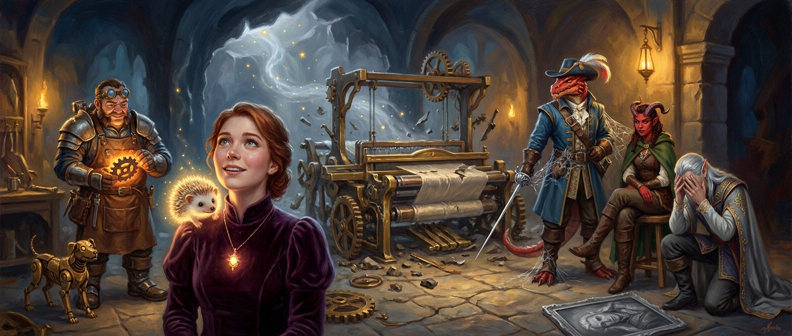
Artist reconstruction from third-party description — accuracy not guaranteed.
Something opened. Not a door in the wall; a door in the room. Through it: stars, and light, and small bright things pouring out and away like sparks from a struck log — over the manor, over the town, out toward the fields. And in among the bright things, seen only by the two sharpest pairs of eyes in the room, one thing that was not bright. Something dark, and wrong, and patient, that stepped through and hung there in the stopped moment and then was not there, in a way that neither of them could afterwards describe to my satisfaction or their own.
The door closed. The great loom collapsed into pieces on the floor as though it had only ever been held up by the sound it made. And the silence in the east wing was the first true silence anyone in Daggerford had heard all night.
The lantern in her arms was empty. The glass was broken. And a voice that only she could properly hear said something she later repeated to the others, which I set down as she gave it: "I could have left. I wanted to stay with you. But something went through there. It's found us. It's not good."
And a small spiked light — a hedgehog, if you had seen it as a child; a spiky bright thing with a face, if you had not — floated once round the ruined room and settled on her shoulder, where by all accounts it belongs.
Nobody argued with her about whether it was a hedgehog.
Chapter ThirteenFireworks
The steward was the first to recover, because stewards are. He pointed out that the town watch would be there in moments — the light had been visible from the square — and that what the four of them said in the next few minutes would decide whether his lordship slept tonight in his bed or in a cell. He did not beg. He said he would be grateful.
The foreign gentleman thought about this for as long as it takes to say it and announced that it had been fireworks. His fireworks. To celebrate the festival. He had perhaps overdone it, and made a mess, and was sorry. The others, one after another, agreed that yes, now he mentioned it, it had been fireworks. The watch arrived; the steward, a reputable man, confirmed the fireworks; the lord of the manor was too busy weeping to contradict anyone; and the watch, looking at a laboratory full of dead brass and four exhausted strangers, one of them wearing a small glowing animal, said what the watch always says: that they might be back with questions, and that nobody was to leave town.
Then they were shown to the guest rooms of the manor they had broken into, and slept.
Unscheduled Fireworks at the Manor; Lord Vey Indisposed
A spectacular pyrotechnic display, credited to a visiting engineer, concluded the Star Salon shortly after midnight and was visible from every street in town. Residents reporting "lights coming down in the fields" are reminded that this is what fireworks do. Lord Vey is resting. His steward asks that inquiries be directed to him.
Separately: a member of festival security was treated for minor injuries and a quantity of spider silk. He declined to explain the latter.
PostscriptA matter of naming
One last thing, because it was raised at the table and I think it will be raised again. Among the foreign gentleman's people it is the custom to name a man for what he has done, and until tonight this town has called him Rooffall, after his arrival. Tonight he read a machine nobody else could read, argued a grieving wizard to a standstill, and put his bare hand into a spinning engine to keep the sky from falling on Daggerford.
The guardhouse is taking suggestions.
The Morning AfterBeds, and beasts
They woke in the manor's guest wing, in beds with actual sheets, which after two nights of this is a thing worth recording. Nobody woke them. The house was very quiet, the way a house is quiet when the people who run it have not slept.
Outside, Daggerford had already been awake for hours, because Daggerford had a great deal to look at.
The reports reached the manor faster than breakfast did. There was a fish — a fish — swimming slowly through the air of the Bramwells' hayloft, glowing faintly, untroubled by the absence of water. There was something like a lace curtain drifting over the chimneys on Tanner's Row, grazing on the smoke. There was a second small many-eyed creature in the Millers' shed, and it had chirped, and — this is the part the Millers' boy could not stop telling people — something had chirped back. A farmer stood in the market with a three-headed carrot in his hand, holding it out to anyone who would look, not for sale, just as evidence. The town crier, gamely, at the fountain: "Residual fragments of the comet! Lord Vey's scholars—" and here he checked his card, and paused, and said "—further announcements to follow," and went home.
Half the town was terrified. The other half was delighted. Both halves were gossiping, and the four people who knew what had actually happened had, wisely, said fireworks.
AshkaWhat the druid found
The druid was out before anyone else, and walked the town the way she walks her woods — not looking for anything, letting things show her where they were. What she found, by her own account, was this: they are animals. Lost ones. Not spirits, not omens, not fragments of anything. Creatures from somewhere the light is different, dropped into a town they do not understand, harmless and hungry and mostly bewildered — the way a fox is when it wanders into a kitchen. They are not from the same place as one another, either; the fish and the curtain-thing are as different as a fish and a curtain. Whatever door opened last night opened onto more than one room.
On Tanner's Row she stood for a long time under the lace-curtain thing while it fed on the smoke from the chandler's chimney. It was, she said, a little like watching a cow in a good field. The chandler's daughters had been up since dawn feeding it — one of them had already given it a name, and would not be talked out of the name, and the druid did not try. She noted that the chimney's smoke had gone slightly grey on the other side of it. She noted, too, that the grass on the ridge road, when she walked out to look, had a faint green in it that had not been there yesterday. The rings are receding. Something, at least, is mending.
FizwickWhat the engineer found
The foreign gentleman went straight to the east wing, where the Dredge — that is its name; the household has been calling it that for a month — lies in pieces across the floor. The brass sentinel lies among them. It collapsed, the steward has been telling people, during the fireworks. His small brass dog did not, and spent the morning nosing through the wreckage like a terrier in a scrapyard, which the gentleman did not stop because he was doing the same thing.
He spent the better part of an hour on the sentinel alone, and what he found under its chest-plating he has told his companions and I set down as he told them. There is a maker's mark on the chassis. It is a mark he knows — the mark of a master engineer of his own city, a man who had his own guild and his own way of doing things, who was rumoured to be working on things the other guilds had forbidden, and who disappeared, along with his workshop, sixty years ago. The pattern of the mark is one retired before the gentleman was born. The forge-date on the plating is sixty years out of phase with everything else in that room.
The sentinel did not come through last month. It came through at the last comet — the same night, if the druid's arithmetic and the old farmers' memory are right, as a bad harvest at Harvest Hill, and a small light that a child called a hedgehog. Someone from the gentleman's world crossed before him, sixty years ago, and did not come back — or did not come back here. And a crossing, it turns out, can be built for, charted, and survived. His star-charts have a destination now. He was, witnesses agree, uncharacteristically quiet about it.
He also observed, for the record, that a great deal of the sentinel is compatible with his dog.
CelesteWhat nobody found
The young woman from Harvest Hill was not seen all morning. One servant went up with a breakfast tray and came down with it. He had been told, through the door, politely, to leave her alone. He swears — and he has been asked several times, by several people, and has not changed his story — that before he knocked he heard her talking to someone, and that when the door opened a crack there was no one in the room but her and some kind of ball of light, and that the ball of light was, he is fairly sure, talking back.
The household has decided not to have an opinion about this.
RexWhat the dragonborn waited for
Festival security waited. He waited in the hall, then in the kitchen, then in the hall again. He wished to speak to the steward, on a matter of wages, and the steward was not to be found. He wished to speak to Lord Vey, and Lord Vey was not receiving. The household staff were sympathetic, and useless, and kept offering him tea. He is, I am told, very good at waiting, in the way of a man who is not good at it at all and has simply had a great deal of practice.
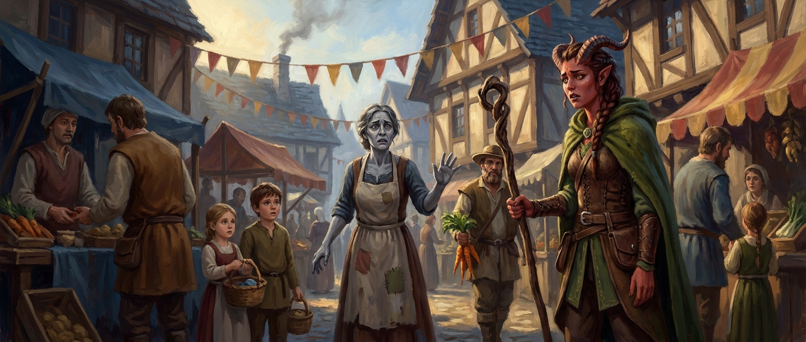
Artist reconstruction from third-party description — accuracy not guaranteed.
NoonThe witness
It was the chandler's wife. She found the druid in the market, and the market went quiet around her, because her face was the wrong colour.
She had been watching the curtain-thing on the chimney. It was lovely, she said. It was drinking the smoke, and her girls had named it, and she had gone out with a cup of something to sit and watch it. And then something dark had come — she could not say from where; she started to say where and stopped — and it had eaten it. Not eaten. She kept correcting herself. It had folded it up. Like a hand closing. The light had gone into it. "And then there wasn't anything there. Not the dark thing either. Nothing." She could not describe the shape. She kept beginning to and stopping. The druid asked her, gently, how big, and she held up her hands, and moved them apart, and then put them down and said she didn't know.
By mid-afternoon it was not one report. The fish in the Bramwells' hayloft had not been seen since eleven. A glowing thing the size of a cat that had spent the morning under the bridge was not under the bridge. Nobody had seen anything take them. There were no bodies, because there was nothing to leave a body. There was just less light in Daggerford than there had been at breakfast.
The town, which had been gossiping, stopped. People took their children indoors in the middle of the day. Somebody asked the watch commander what it was, and the watch commander — a fair man — said he did not know, and that was worse than any answer.
What is it? Is it still here? Are we safe? Nobody on the streets of Daggerford can answer any of that. Four people in the manor on the hill can answer slightly more, because two of them saw something dark step through a door last night and hang in the air and be gone, and neither has stopped thinking about it since.
AfternoonThe lord of the manor
Lord Vey sent for them in the late afternoon. He received them in the east wing, among the wreckage, with the grey portrait face-down on a bench. He had spent the night counting, he said, and the morning listening to the reports come in, and he wished to say three things.
The first was that he was sorry. He said it plainly and did not decorate it. He had wanted one thing so badly, for so long, that he had stopped asking what it cost, and last night four strangers had made him look at the bill. He had put a hole in the sky over his own town, and things had fallen through it, and one of them, it now appeared, cast a shadow.
The second was that he intended to fix it. Whatever he had let through, he would see it dealt with, and his fortune — which is considerable, and which has for eleven years been pointed at exactly one thing — was now pointed at that.
The third was that he could not do it alone, and did not intend to try. He needed people who had been in the room. And so:
To festival security: his debts — "yes, I know about those; a man in my position hears things" — cleared, in full, by the end of the week. A steady wage after that, honest, paid in advance this time. And a wardrobe, because, he said, a man who can talk like that should not have to do it in a borrowed coat.
To the engineer: the Dredge, or what was left of it — every gear, every yard of silver wire, every scrap of star-metal in the region, which was to say all of it — was his to use. And the library. Lord Vey has been collecting everything ever written about the far shore for eleven years, and he did not think he would be needing it in the way he had planned.
To the druid: the ridge, and whatever it takes to make it green.
To the young woman from Harvest Hill, whom he looked at for a long moment before speaking: the library was hers, too, before anyone's. She had known what his lantern was when nobody else in the room did, and she had known a thing about him he had told no one. He would not ask how. "Finders find. Libraries are kinder than engines."
And to all four of them: the manor. The east wing was theirs — a base, a workshop, a place to sleep with sheets — for as long as this took.
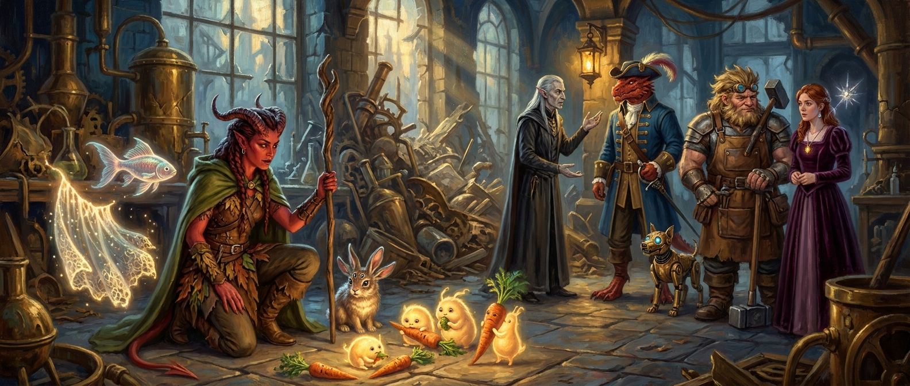
Artist reconstruction from third-party description — accuracy not guaranteed.
It was somewhere around the library that the druid noticed she was not alone. They had been drifting in through the broken window and the open door the whole time he had been talking — the glowing things, the lost animals of the morning. A round one with too many eyes, nibbling a three-headed carrot. Another with a two-headed one. Three or four small bright creatures that looked, honestly, rather like carrots themselves, and were keeping a nervous distance from the ones that were eating. The second chirping thing, alone, pressed against her knee and shaking. They had gathered around her the way sheep gather around the one tree in a field when the sky goes dark. They were not curious. They were afraid, and they had come to the one person in Daggerford who could tell.
And on the young woman's shoulder, the small spiked light leaned close to her ear and whispered something. Nobody else in the room heard it. Whatever it was, she did not repeat it.
To the Players
The scenes above are what your characters did that day. If you want to ask questions, poke at anything, or do something else with your character between now and the next session — talk to the chandler's wife, take apart the Warden, read a book in the library, go looking for the fish — message God. I mean the DM. Directly. Everyone gains a level before we play; the guides below are for that.
Individual guides for Celeste, Fizwick, Ashka and Rex are being written. Celeste's will include Spikey.
Fizwick "Rooffall" Cogburn
DRAFT — to be reviewed.
- Level 4 gives you an Ability Score Improvement (or a feat). +2 Intelligence makes your spells, Bolt's attacks and your tinkering all better at once.
- More hit points: roll your hit die (or take the average) and add your Constitution modifier.
- Nothing new from your subclass until level 5 — so this level is about sharpening what you have: know your prepared spells (Shield and Heroism are always ready for a Battle Smith), and revisit your infusions.
- Bolt grows with you. Re-read his stat block; he can attack as your bonus action every turn.
- Salvage: there is a great deal of Verrosian brass on the floor of the east wing. Bring a bag.
Ashka of the Misty Forest
DRAFT — to be reviewed.
- Level 4 gives you an Ability Score Improvement (or a feat). +2 Wisdom improves every spell you cast and the DC people must beat.
- Wild Shape widens: beasts with a swim speed are now allowed. Pick two or three forms and know their numbers before the session — the spider's web needs a recharge roll, the bear hits hard, the wolf is fast.
- One more cantrip. Also worth a look: Moonbeam (you found it), Entangle, Faerie Fire.
- Healing Word is a bonus action and it kept Celeste alive. Keep it prepared.
- Remember: a shapeshift carries everything you hold. That trick worked once. The ceiling is not a hiding place.
Celeste of Harvest Hill
DRAFT — to be reviewed. Spikey's powers and stats to be designed together.
- Level 4 gives you an Ability Score Improvement (or a feat). +2 Charisma makes everything you do better — spells, persuasion, and the speech that ended the fight.
- You learn one new spell and one new cantrip. Choose the spell with a fight in mind.
- Count your slots: Misty Step and Detect Thoughts are level 2, and you have few of those. Shield can cancel a hit as a reaction — it would have saved you fifteen hit points tonight.
- Disengage is an action anyone can take. It is on no sheet and it saved your life.
- Spikey. Your familiar, at last visible to everyone. Tiny, fragile, flies, whispers to you at any distance. We design the rest together.
Kavarex "Rex" of the Silver Sail
DRAFT — to be reviewed.
- Level 4: Ability Score Improvement or a feat. You have already planned this. Possibly several times.
- Sneak Attack wants an ally next to your target, or advantage. Every round. Say it out loud.
- Your persuasion is a weapon. Tonight it opened two doors and one wizard. Nobody in Daggerford has forgotten the web.